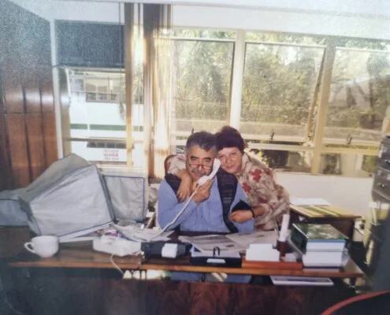
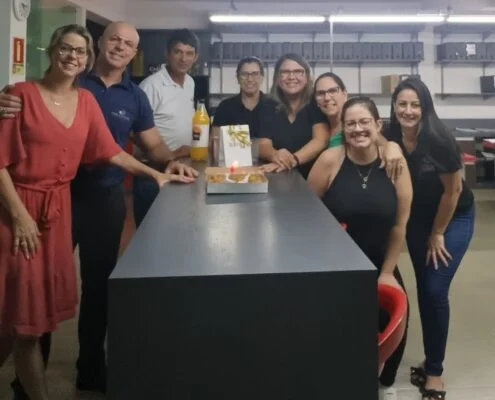

Nossa história
Sozinhos vamos mais rápido. Juntos vamos mais longe.
Três gerações, dois escritórios que viraram um só, e mais de 30 anos de atividade contábil em Gravataí.
Desde 1973
Nossa história
Tudo começou com o fundador Claudio Tadeu Alves Paim que, em meados de 1973, recém-formado técnico contábil pela Escola Dom Feliciano em Gravataí/RS, resolveu empreender abrindo seu próprio escritório — aproveitando o conhecimento de experiências anteriores e sua própria rede de contatos. O escritório foi se desenvolvendo, crescendo, agregando colaboradores e tornando-se referência na cidade por trabalho sério e competente.
Em 1993, sua filha Flaviana Vieira Paim, aos 19 anos, integrou a equipe — antes mesmo de se formar contadora, inspirada pelos passos do pai. Formou-se no final de 1995 e tornou-se sócia, dividindo a administração do então "Escritório Paim".
Nesses anos, muitos colaboradores passaram pela casa, e um em especial, chamado Washington Luis Furquim de Almeida — também bastante jovem, em seu primeiro emprego — depois de adquirir experiência, inspirado pelo mesmo caminho, ousou abrir seu próprio escritório alguns anos mais tarde: a WA Contabilidade, também em Gravataí.
Por força do destino, muitos anos depois, em meados de 2009, Flaviana e Washington vieram a se encontrar. Casaram-se, e resolveram unir os dois escritórios — criando, em 2011, a Paim & Furquim Contabilidade, em sociedade com o fundador Claudio Paim.
Em março de 2014, o contador fundador Claudio Paim veio a falecer. O escritório, fruto de mais de 40 anos de experiência até então, seguiu sob o comando dos outros dois sócios, que o modernizaram — mantendo a mesma equipe e a mesma dedicação de sempre.
Hoje ocupamos uma área de aproximadamente 300 m² no quarto andar, em sala própria, no Centro de Gravataí, com uma equipe jovem e altamente capacitada. Com instalações modernas e sempre atualizados sobre novas tecnologias e tendências, mantemos toda a infraestrutura funcional e integrada — o que possibilita um trabalho ágil e organizado.
Não nos limitamos a apurar impostos e manter sua contabilidade em dia: acreditamos que uma boa conversa agrega muito, e gostamos de participar de outras áreas da empresa dos nossos clientes, ajudando na gestão empresarial, sempre buscando preservar o patrimônio e melhores resultados pra ambos.
São muitos anos de atividade profissional contábil na cidade de Gravataí/RS, sempre agindo com ética, transparência e competência, fortalecendo vínculos de amizade e colaboração que credenciam nosso escritório a atender empresas igualmente comprometidas com resultado.
Um pouco da nossa trajetória
Um trabalho primoroso precisa de um ambiente propício

Equipe Paim & Furquim
Dez/2022Nossos diferenciais e valores
O que guia o nosso trabalho
01
Atendimento qualificado
Especializado e totalmente personalizado, próximo e acessível diretamente com nossos colaboradores — por meios eletrônicos, reuniões e visitas.
02
Experiência
Mais de 30 anos de experiência no mercado contábil, com reputação imaculada.
03
Comprometimento
Buscamos sempre atualização e as melhores soluções de mercado. Nosso planejamento é voltado à realidade de cada cliente, visando o crescimento com segurança — sempre apontando benefícios e riscos de cada situação.
04
Estrutura completa
Uma estrutura ampla e moderna, que nos dá as melhores condições pro bom desempenho da nossa equipe.
Nossa missão
"Oferecer soluções na área contábil com qualidade, transparência e ética, sendo reconhecidos pelos nossos clientes como parceiros importantes para o seu sucesso empresarial."
Responsáveis técnicos
Os sócios

Flaviana Vieira Paim
Diretora técnicaContadora formada pela Unisinos em 1995 e advogada formada pela Ulbra-Gravataí/RS em 2005, pós-graduada em auditoria e perícia pela Fapa e pós-graduanda em licitações e contratos. Sócia e responsável técnica pela Paim & Furquim Contabilidade e sócia do INGEP — Instituto Nacional de Gestão Pública (consultoria e treinamentos corporativos, sede em Porto Alegre/RS). Membro fundadora do INCP — Instituto Nacional da Contratação Pública.
Instrutora e palestrante na área de licitações e contratos, com temáticas voltadas à terceirização de serviços na Administração Pública. Professora na pós-graduação em Licitações e Contratos da CERS e da Católica SC — Centro Universitário. Autora de diversos artigos publicados na área de terceirização; coautora de "Subsídios para contratação pública" (Ingep Editora, 2012) e de "Instrução Normativa 05/17-MPDG — Comentários a artigos e anexos" (Ingep Editora, 2017); coordenadora do livro "Terceirização na Administração Pública: Boas Práticas e atualização à luz da Nova Lei de Licitações" (Fórum, 2021).

Washington L. Furquim de Almeida
Diretor executivoTécnico contábil formado em 1993 na Escola Dom Feliciano, com escritório profissional individual constituído em Gravataí (WA Contabilidade) por 22 anos, além de diversos cursos técnicos em contabilidade e gestão de pessoas.
Atualmente é sócio e diretor da Paim & Furquim Contabilidade, responsável pelo departamento societário.
Registro no Conselho Regional de Contabilidade:
Conversa sem compromisso
Quer conhecer o escritório de perto?
Chama no WhatsApp e marca uma conversa com Flaviana ou Washington.